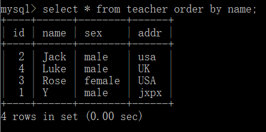

来自之前cnblog的博客
源地址：https://www.cnblogs.com/This-is-Y/p/11252206.html
安装：
安装phpstudy，通过phpstdy来学习MySQL。

然后登陆mysql，使用你的密码登陆（默认是root）
之后就可以开始学习mysql语句了。
使用：
mysql语句不区分大小写，每一个命令都是以；结束（如create database sqlname;）
\h获取帮助
\c退出编辑（如图）
进入’>模式时，使用\c退出到->(如图）
增加：CREATE DATABASE ’数据表名字‘;（如create database sqlname;）
创建内容：
create table teacher(
id int(4) not null primary key auto_increment,
name char(20) not null,
sex char(10) not null,
addr char(10) not null
);
插入数据：insert into teacher(name,sex,addr) values(‘Y’,’male’,’jxpx’);
检索数据：
1，* 通配符：
select * from teacher;（*表示所有，这个select关键字本来是查找某个数据）
之后就是这个样子：

2，distinct （独特的）关键字，不显示重复的。如：
select distinct name from teacher;
然后就是：

3，限制数据
在各个数据库中的实现各不一样
SQL Server和Access中：select top 4 id from teacher；
DB2：select id from teacher fetch first 5 rows only；
Oracle：select id from teacher where rownum <= 5;
MySQL,MariaDB,PostgreSQL,SQLite:select id from teacher limit 5;
切换到一个数据库：use ’数据表名字‘；（如use test）
显示所有数据库：show databases；
如图：

在数据库中显示数据表：show tables;

更新数据： update teacher set name=’Josely’ where id=5;

更新前： 更新后：
更新后：
删除数据： delete from teacher where id=5;
删除前：参考前面的图，删除后：

where句子：
select 你要的信息 from 一个表或者多个表 where 满足的条件（判断）
如：select * from teacher where sex=‘male’；
如：select name from teacher where sex=‘male’；
where 语句可以加上and 与or 进行连接，以及（）
order by 语句：
select 你要的信息 from 一个表或者多个表 order by 字段 asc/desc
asc与desc表示正序与逆序（默认为asc，可以不写）
如 select * from teacher order by name;
select * from teacher order by name desc

此时，注意，order by 后面可以加数字（在sqli中有用的）
select * from teacher order by 1;（1=id）
select * from teacher order by 2;（2=name）
select * from teacher order by 3;（3=sex）
select * from teacher order by 4;（4=addr）
like 操作符：
** **创建比较特殊数据的搜索模式
样例表：
1:% 表示任意字符出现任意次数
如：select * from student where name like ‘l%’;
2:_ 用法与%一样，但是只匹配单个字符
如：select * from student where name like ‘j‘
3:[] 指定一个字符集，他必须匹配指定位置（通配符的位置）的一个字符
如：……我的MYSQL用不了[]…………淦
字段：
** **字段连接：‘+’只能连接数字，连接字符串要用concat（）

union语句：
select 需要的信息 from 数据表1 union select 需要的信息 from 数据表2
如图两个表：
使用select name from student union select name from teacher;后，

值得注意的是，这样子写，不会显示重复的（name为Y的两个数据只显示一个）
要显示两个，应使用union all。
select name from student union all select name from teacher;
效果如下图
使用union，还可以这样子玩：
注释：
使用#字符，或– （减号减号空格）来注释单行，还有一个/* */。


内置函数：
database():
load_file(‘写文件路径’):

（不知道为啥没有。。。。）
current_user:
当出现 时：
时：
原因是没有选择一个数据库，可以先show databases；查看有哪些数据库，再use ’数据库名‘ 来使用一个数据库。